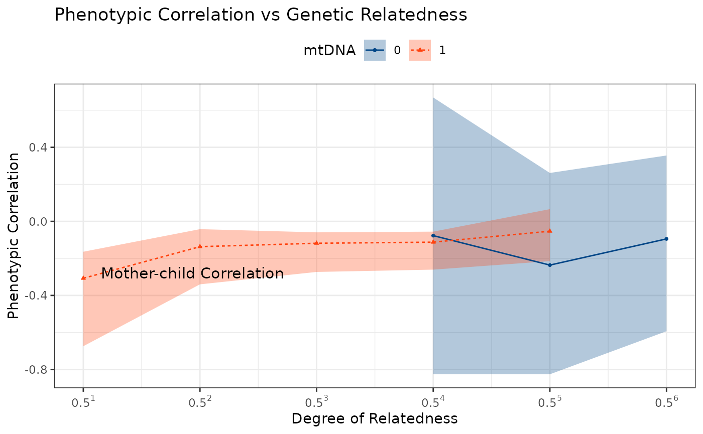
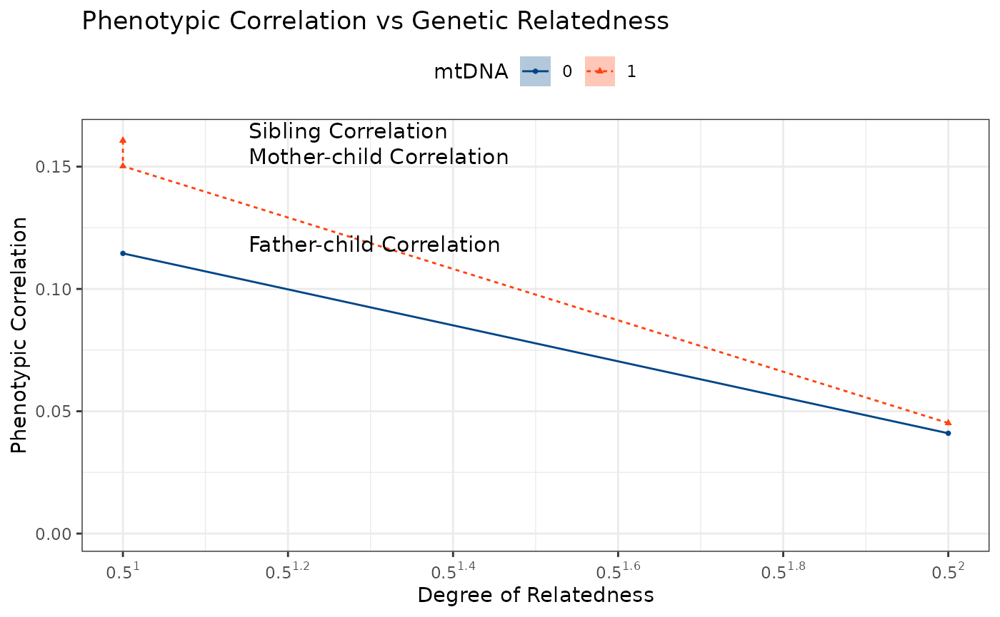

Extended Plotting Phenotypic Correlation by Degree of Relatedness
S. Mason Garrison
2025-07-04
Source:vignettes/articles/v21_phenotypicbydegree.Rmd
v21_phenotypicbydegree.RmdThis vignette demonstrates how to visualize phenotypic correlation by
degree of relatedness using the ggPhenotypeByDegree
function from the ggpedigree package. This function is
particularly useful for analyzing and visualizing the relationship
between phenotypic traits and genetic relatedness in pedigree data.
Click to expand pedigree setup
library(ggpedigree)
library(BGmisc)
library(data.table)
# Load the example data
data("redsquirrels")
library(dplyr)
# library(broom) # for tidy()
library(purrr) # for map_* helpers
# Filter for the largest family, recode sex if needed
ped_filtered <- redsquirrels %>%
recodeSex(code_female = "F") %>%
filter(famID == 160)
kin_degree_max <- 12 # maximum degree of relatedness to consider
# Calculate relatedness matrices
add_mat <- ped2add(ped_filtered, isChild_method = "partialparent", sparse = TRUE)
mit_mat <- ped2mit(ped_filtered, isChild_method = "partialparent", sparse = TRUE)
cn_mat <- ped2cn(ped_filtered, isChild_method = "partialparent", sparse = TRUE)
df_links <- com2links(
writetodisk = FALSE,
ad_ped_matrix = add_mat,
mit_ped_matrix = mit_mat,
cn_ped_matrix = cn_mat,
drop_upper_triangular = TRUE,
gc = FALSE
)
dataRelatedPair_merge <- df_links %>%
left_join(ped_filtered %>% select(personID, lrs, ars_n),
by = c("ID1" = "personID")
) %>%
rename(
lrs_k1 = lrs,
ars_n_k1 = ars_n
) %>%
left_join(ped_filtered %>% select(personID, lrs, ars_n),
by = c("ID2" = "personID")
) %>%
rename(
lrs_k2 = lrs,
ars_n_k2 = ars_n
)
# double enter
dxlist <- c(
"ID1", "ID2", # intentional ordering
"addRel", "mitRel",
"cnuRel",
names(dataRelatedPair_merge)[endsWith(names(dataRelatedPair_merge), "_k2")],
names(dataRelatedPair_merge)[endsWith(names(dataRelatedPair_merge), "_k1")]
)
kin_degrees <- 0:12
rel_vals <- 2^(-kin_degrees)
rel_bins <- purrr::map_chr(rel_vals, ~ paste0("addRel_", .x))
rel_labels <- c("addRel_1+" = "addRel_1+")
# bin assignment function
assign_addRel_bin <- function(rel) {
for (val in rel_vals) {
upper <- val * 1.1
lower <- val * 0.9
if (!is.na(rel) && rel >= lower && rel <= upper) {
return(paste0("addRel_", val))
} else if (!is.na(rel) && rel > upper) {
return(paste0("addRel_+", val))
}
}
if (!is.na(rel) && rel > 2^0 * 1.1) {
return("addRel_1+")
}
if (!is.na(rel) && rel == 0) {
return("addRel_0")
}
return(NA_character_)
}
dataRelatedPair_merge <- data.table::rbindlist(
list(
dataRelatedPair_merge,
dataRelatedPair_merge[, dxlist]
),
use.names = FALSE
) %>%
mutate(addRel_bin = vapply(addRel, assign_addRel_bin, character(1))) %>%
mutate(addRel_factor = factor(addRel_bin, levels = c("addRel_1+", rel_bins, paste0("addRel_+", rel_vals), "addRel_+0", "addRel_0"))) %>%
select(-addRel_bin)
result <- dataRelatedPair_merge %>%
group_by(addRel_factor, mitRel, cnuRel) %>%
summarise(
n_pairs = n() / 2, # divide by 2 to account for double counting
lrs_cor_test = list(tryCatch(cor.test(lrs_k1, lrs_k2, use = "pairwise.complete.obs"),
error = function(e) NULL
)),
ars_n_cor_test = list(tryCatch(cor.test(ars_n_k1, ars_n_k2, use = "pairwise.complete.obs"),
error = function(e) NULL
)),
addRel_mean = mean(addRel, na.rm = TRUE),
addRel_sd = sd(addRel, na.rm = TRUE),
addRel_min = min(addRel, na.rm = TRUE),
addRel_max = max(addRel, na.rm = TRUE),
.groups = "drop" # eliminates the need for ungroup()
) %>%
## unpack the two cor.test() objects -------------------------------
mutate(
# ---- LRS pair ----
cor_lrs = map_dbl(lrs_cor_test, ~ if (is.null(.x)) NA_real_ else .x$estimate),
cor_lrs_stat = map_dbl(lrs_cor_test, ~ if (is.null(.x)) NA_real_ else .x$statistic),
cor_lrs_p = map_dbl(lrs_cor_test, ~ if (is.null(.x)) NA_real_ else .x$p.value),
cor_lrs_df = map_dbl(lrs_cor_test, ~ if (is.null(.x)) NA_real_ else .x$parameter),
cor_lrs_ci_lb = map_dbl(lrs_cor_test, ~ if (is.null(.x)) NA_real_ else .x$conf.int[1] * sqrt(2)),
cor_lrs_ci_ub = map_dbl(lrs_cor_test, ~ if (is.null(.x)) NA_real_ else .x$conf.int[2] * sqrt(2)),
# ---- ARS‑n pair ----
cor_ars_n = map_dbl(ars_n_cor_test, ~ if (is.null(.x)) NA_real_ else .x$estimate),
cor_ars_n_stat = map_dbl(ars_n_cor_test, ~ if (is.null(.x)) NA_real_ else .x$statistic),
cor_ars_n_p = map_dbl(ars_n_cor_test, ~ if (is.null(.x)) NA_real_ else .x$p.value),
cor_ars_n_df = map_dbl(ars_n_cor_test, ~ if (is.null(.x)) NA_real_ else .x$parameter),
cor_ars_n_ci_lb = map_dbl(ars_n_cor_test, ~ if (is.null(.x)) NA_real_ else .x$conf.int[1] * sqrt(2)),
cor_ars_n_ci_ub = map_dbl(ars_n_cor_test, ~ if (is.null(.x)) NA_real_ else .x$conf.int[2] * sqrt(2))
) %>%
select(-lrs_cor_test, -ars_n_cor_test) %>% # drop the list‑columns once unpacked
rename(cnu = cnuRel, mtdna = mitRel)
ggPhenotypeByDegree(
df = result,
y_var = "cor_lrs",
y_ci_lb = "cor_lrs_ci_lb",
y_ci_ub = "cor_lrs_ci_ub",
config = list(
use_only_classic_kin = FALSE,
drop_classic_kin = FALSE,
group_by_kin = TRUE,
use_relative_degree = TRUE,
drop_non_classic_sibs = FALSE,
filter_degree_max = 12,
grouping_column = "mtdna_factor",
filter_n_pairs = 10
)
)
Pedigree Setup
Click to expand pedigree setup
library(tibble)
library(dplyr)
library(ggpedigree)
df <- pedigree_df <- tribble(
~n_pairs,
~addRel_min,
~addRel_max,
~addRel_emp_min,
~addRel_emp_mean,
~addRel_emp_median,
~addRel_emp_max,
~mtdna,
~cnu,
~age_k1_meanFunction,
~male_k1_meanFunction,
~same_matID_meanFunction,
~same_patID_meanFunction,
~USA_flag_10_k1_meanFunction,
~USA_flag_10_polychorFunction_rho,
~USA_flag_10_polychorFunction_se,
~USA_flag_10_polychorFunction_chisq,
~USA_flag_10_polychorFunction_df,
~USA_flag_10_ml_polychorFunction,
3617250, 0.225, 0.275, 0.2255859375, 0.247734086859983, 0.25, 0.27490234375, 1, 0, 59.2335021779651, 0.480619365892598, NA, NA, 0.249700992238048, 0.04517140756813, 0.000691314990032303, 0.00000799819827079773, 0, 0.0451713825840523,
4983424, 0.225, 0.275, 0.2255859375, 0.247985118108249, 0.25, 0.27490234375, 0, 0, 60.2924621468198, 0.54683237363258, NA, NA, 0.247046760504304, 0.0409988164718674, 0.000599673001112523, 0.00000799819827079773, 0, 0.040998793040341,
120024, 0.275, 0.45, 0.359375, 0.42720031928978, 0.4375, 0.44921875, 1, 1, 55.3786442198885, 0.519857671410953, NA, NA, 0.208202301154754, 0.169242204331722, 0.00393269696620211, 0.00000814738450571895, 0, 0.169234306738862,
137947, 0.275, 0.45, 0.275146484375, 0.336850848231778, 0.34375, 0.447265625, 1, 0, 58.7404851093794, 0.436444779593302, NA, NA, 0.230130064360623, 0.0979941906533943, 0.00359788288853913, 0.00000800052657723427, 0, 0.0979945954952227,
108989, 0.275, 0.45, 0.275390625, 0.328092281014401, 0.3125, 0.4453125, 0, 0, 60.2531852003308, 0.619355993501189, NA, NA, 0.233078768161892, 0.0774003012451702, 0.00404657995476565, 0.00000800139969214797, 0, 0.0774005589379321,
1668205, 0.45, 0.55, 0.4501953125, 0.495319721631096, 0.4990234375, 0.549560546875, 1, 1, 57.9295757847709, 0.522333747318167, NA, NA, 0.257514897453126, 0.160645710133276, 0.000975187176863543, 0.0000904696062207222, 0, 0.16065612400207,
729441, 0.45, 0.55, 0.451171875, 0.496536543871464, 0.5, 0.5498046875, 1, 0, 66.1279781018233, 0.275059425002599, NA, NA, 0.265100488202374, 0.150191012774079, 0.00152996759330951, 0.00000815372914075851, 0, 0.150193105587773,
747643, 0.45, 0.55, 0.451171875, 0.49663045074013, 0.5, 0.5478515625, 0, 0, 65.9430606759445, 0.749751203807075, NA, NA, 0.262018010446397, 0.114532502819044, 0.00154238295730097, 0.00000800378620624542, 0, 0.114533380385551,
44787, 0.55, 0.9, 0.55029296875, 0.724711065168643, 0.75, 0.8984375, 1, 1, 63.4350717031309, 0.520855662736692, NA, NA, 0.232835687466476, 0.9999, Inf, 29160.6932985728, 0, 0.952963916809192,
4639, 0.55, 0.9, 0.55029296875, 0.569994330072125, 0.5625, 0.75, 1, 0, 62.3524143288736, 0.366174409830764, NA, NA, 0.231225722917566, 0.12373864513677, 0.0194548428304584, 0.00000800392444944009, 0, 0.123740641721645,
2744, 0.55, 0.9, 0.55078125, 0.566952741528391, 0.5625, 0.75, 0, 0, 62.2241888686131, 0.758432087511395, NA, NA, 0.228467153284672, 0.123400997830296, 0.0254117516477019, 0.00000801651367510203, 0, 0.123405021390264,
1018929, 0.9, 1.1, 0.90234375, 0.994306976854356, 1, 1.09375, 1, 1, 61.9059012997516, 0.523600756854653, NA, NA, 0.254706541475618, 0.9999, Inf, 12530.2189094715, 0, 0.9999,
352, 1.1, 1.5, 1.1005859375, 1.12844427065416, 1.125, 1.25, 1, 1, 47.7579829059829, 0.545454545454545, NA, NA, 0.153846153846154, 0.9999, Inf, 3.76616019073219, 0, 0.9999
)
ggPhenotypeByDegree(
df = df,
y_var = "USA_flag_10_polychorFunction_rho",
y_stem_se = "USA_flag_10_polychorFunction",
y_se = "USA_flag_10_polychorFunction_se"
)